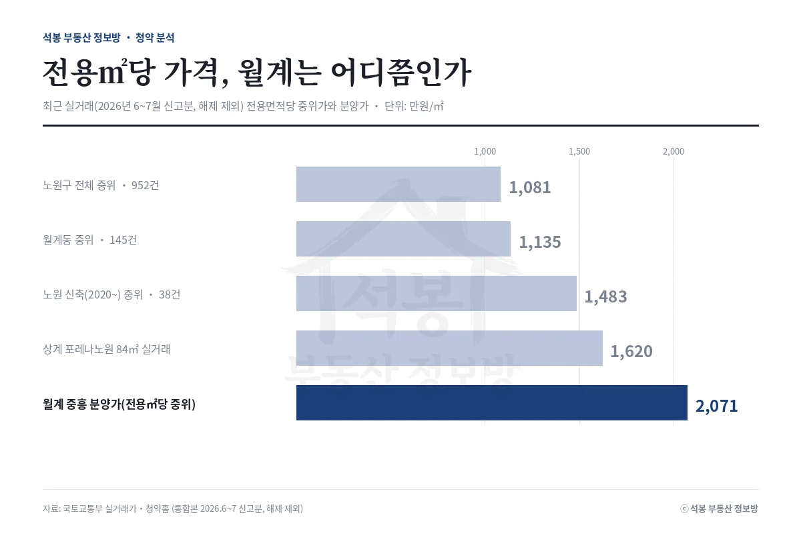
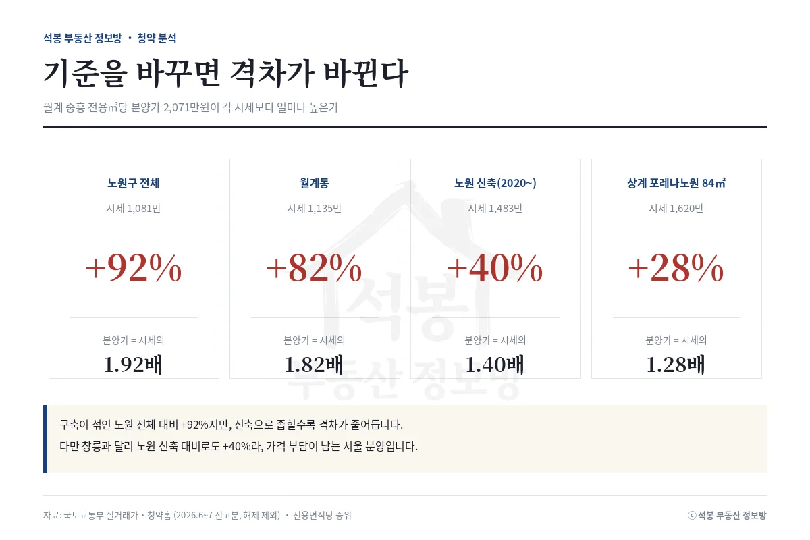
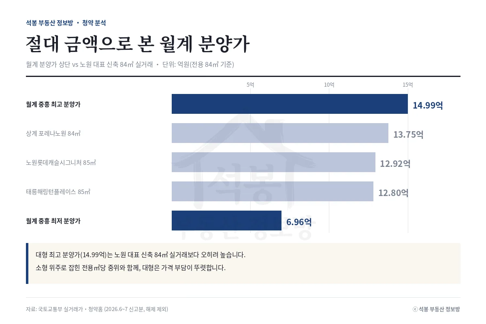
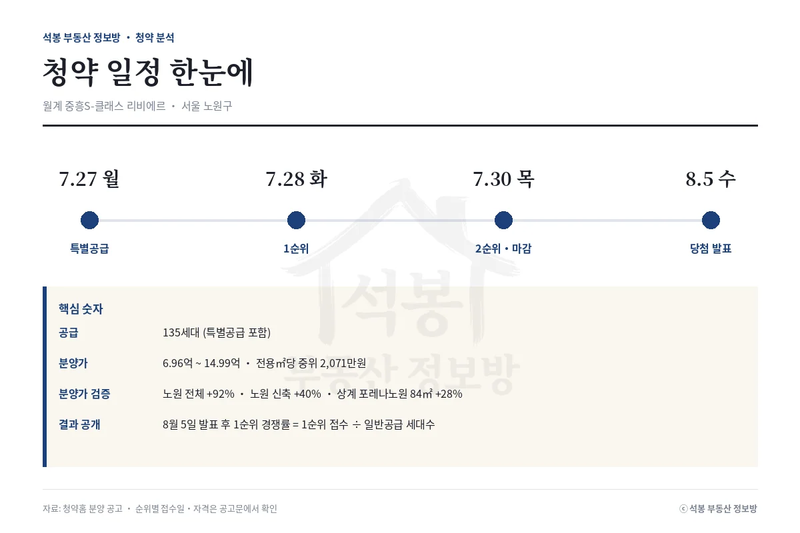

오늘(7월 27일) 서울 노원구 월계동에서 월계 중흥S-클래스 리비에르가 1순위 접수를 시작합니다. 특별공급을 포함해 135세대, 규모는 크지 않지만 서울 안에서 나오는 분양이라 관심이 모입니다. 분양가는 주택형별로 6.96억에서 14.99억, 전용면적당 중위로는 2,071만원입니다. 관심은 하나입니다. 이 값이 노원 시세 대비 비싼가. 답은 "어느 시세와 비교하느냐"에 따라 달라집니다. 최근 실거래로 하나씩 짚어봅니다.
단지 개요: 서울에서 귀한 신축 분양
월계동은 노원구 남쪽, 광운대역·석계역 생활권입니다. 이 일대는 오래된 아파트와 정비사업 기대가 섞여 있어, 새 아파트 분양 자체가 드뭅니다. 이번 단지는 그 자리에 나오는 신축이라 소규모여도 눈길을 끕니다. 접수는 오늘부터 30일까지, 27일 특별공급, 28일 1순위, 30일 2순위 순서이고 당첨자 발표는 8월 5일입니다. 자격 요건과 주택형별 공급 세대, 가점·추첨 비율은 청약홈 공고문에서 반드시 확인하셔야 합니다. 아래 표는 공고 기준 요약입니다.
항목
내용
위치
서울 노원구 월계동 487-17번지 일대
공급 세대
135세대 (특별공급 포함)
분양가(주택형별)
6.96억 ~ 14.99억
전용㎡당 분양가(중위)
2,071만원 (공급㎡당 1,518만원)
접수 / 발표
7.27 ~ 7.30 / 8.5
여기서부터는 회원에게 보여드립니다
카카오 로그인 3초면 전문을 읽을 수 있습니다. 무료입니다.
가입하시면 지역 시장조사 보고서(약식)를 2회 무료로 요청하실 수 있습니다.
이미 회원이면 같은 버튼으로 로그인만 됩니다
분양가 검증: 기준을 바꾸면 답이 바뀐다

최근 실거래(2026년 6~7월 신고분, 해제 제외)의 전용면적당 중위가를 기준별로 놓고 월계 중흥의 분양가(전용㎡당 중위 2,071만원)와 비교하면 아래와 같습니다.
비교 기준 (전용㎡당)
시세
월계 중흥 (2,071만)
노원구 전체 중위 · 952건
1,081만원
+92%
월계동 중위 · 145건
1,135만원
+82%
노원 신축(2020~) 중위 · 38건
1,483만원
+40%
상계 포레나노원 84㎡ 실거래
1,620만원 (13.75억)
+28%

첫 줄만 보면 "시세의 두 배에 가까운 분양"입니다. 하지만 노원구 전체 표본과 월계동 표본에는 1980~90년대 구축이 대거 섞여 있어서, 새 아파트가 들어설 자리의 잣대로는 맞지 않습니다. 비교 대상을 노원 신축(2020년 이후)으로 좁히면 격차는 +92%에서 +40%로 줄고, 노원 대장 신축인 상계 포레나노원 84㎡ 실거래(전용㎡당 1,620만원, 13.75억)와 견주면 +28%까지 내려옵니다. 창릉처럼 신축 대비 마이너스로 떨어지지는 않지만, 격차의 폭은 어느 시세를 대느냐에 따라 이렇게 크게 달라집니다.

한 가지 더 감안할 점이 있습니다. 전용면적당 중위가 2,071만원은 소형 주택형 비중이 클수록 높게 잡힙니다. 서울의 새 소형 아파트는 전용㎡당 2,000만원을 넘는 경우가 흔하기 때문입니다. 실제로 절대 분양가로 보면 이 단지 최고가 14.99억은 노원 대장 신축의 84㎡ 실거래(포레나노원 13.75억, 롯데캐슬시그니처 12.92억)와 겹치는 구간입니다. 정리하면, 월계 중흥은 노원 어느 기준과 비교해도 시세 위에 놓이는 '가격 부담이 분명한 서울 분양'입니다. 결과는 서울 신축이 귀하다는 희소성과 소형 위주 구성이 그 부담을 얼마나 상쇄하느냐에 달려 있는 쪽으로 봅니다.
정리

숫자만 요약하면 이렇습니다. 월계 중흥S-클래스의 전용면적당 분양가 중위는 2,071만원으로, 노원구 전체 중위(1,081만)보다 92% 높고, 월계동 중위(1,135만)보다 82%, 노원 신축 중위(1,483만)보다도 40% 높습니다. 노원 대장 신축 84㎡ 실거래와의 격차가 +28%로 가장 좁고, 절대 분양가 상단은 그 신축 실거래와 겹칩니다. 어느 기준으로 봐도 시세 아래는 아니지만, 비교 대상을 구축에서 신축으로 옮길수록 격차가 빠르게 줄어드는 단지입니다. 서울 신축 희소성을 어떻게 값 매기느냐가 관건입니다. 결과(1순위 경쟁률 = 1순위 접수 건수 ÷ 일반공급 세대수)는 8월 5일 발표 이후 청약홈에서 공개되며, 저희가 데이터로 다시 검증해 정리하겠습니다. 자격 요건과 순위별 접수일, 주택형별 분양가는 반드시 청약홈 공고문에서 확인하세요.
원자료: 청약홈 분양 공고(공고번호 2026000355), 국토교통부 실거래가 공개시스템(시세는 2026년 6~7월 신고분, 해제 제외, 전용면적당 중위가) · 분석·제작: 석봉 부동산 정보방 · 본 자료는 정보 제공 목적이며 투자 권유가 아닙니다. 청약 자격·일정·주택형별 분양가는 청약홈 공고문을 반드시 확인하세요.